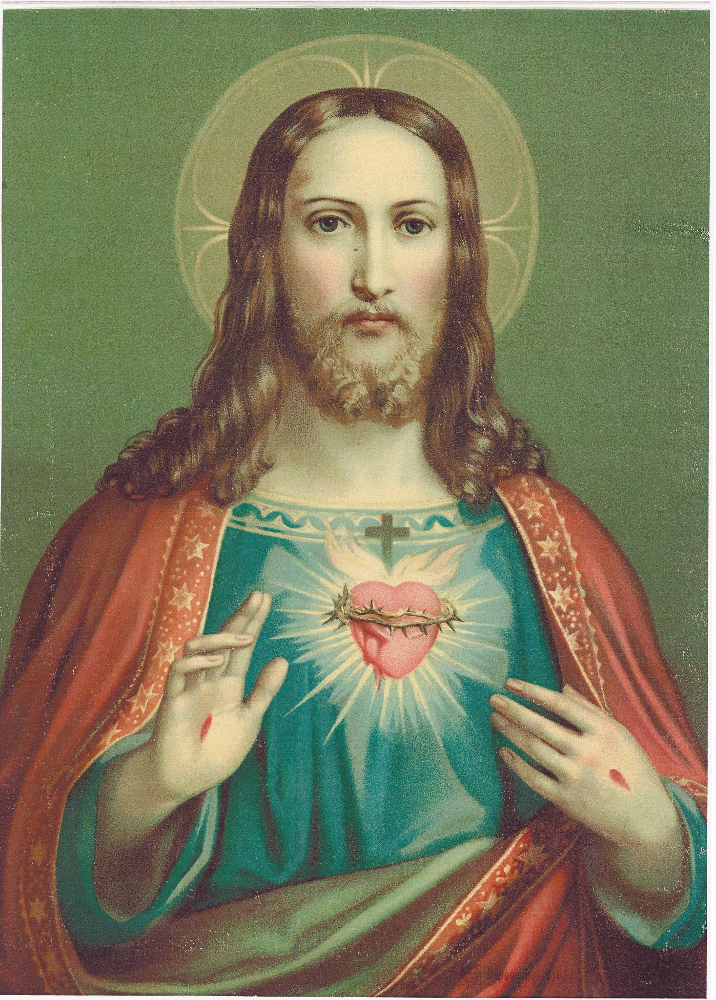
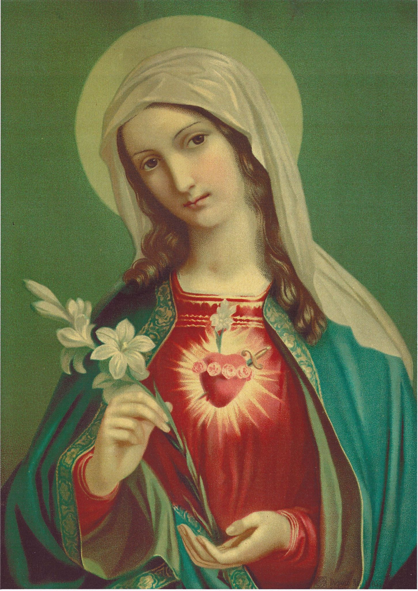
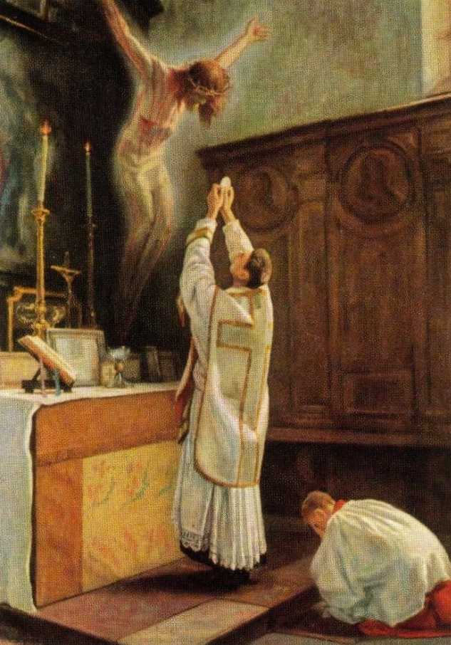

यीशु और मरियम के एकीकृत हृदयों की विजय के लिए पुजारियों और लोकधर्मियों का मरियम आंदोलन e.V.

पुजारियों और लोकधर्मियों का मरियम आंदोलन
यीशु और मरियम के एकीकृत हृदयों की विजय के लिए e.V.
8 दिसंबर 2021 को स्थापित हमारा MPL संत मैक्सिमिलियन मारिया कोल्बे द्वारा स्थापित निष्कलंक की मिलिशिया के मूल रूप में पूरी तरह उन्मुख है। हमने इस महान मरियमीय प्रेरित को परमेश्वर की माता मरियम और संत यूसुफ के साथ अपने नए धर्मप्रचार आंदोलन के विशेष महासंरक्षक के रूप में चुना है।
MPL के लक्ष्य
- सच्चे कैथोलिक विश्वास की साहसी गवाही
- यीशु और मरियम के एकीकृत हृदयों का सम्मान और संपूर्ण विश्व में उनकी विजय को बढ़ावा
- दैवीय इच्छा में जीवन के माध्यम से नाज़रेथ के पवित्र परिवार की नकल
- साझा विश्वास मार्ग पर आपसी सुदृढ़ीकरण और समर्थन
- सत्य की खोज करने वालों को सहारा और मार्गदर्शन
- धर्मशिक्षण, धर्मप्रचार और मिशन कार्य

समस्त पाखंडों की विनाशक
वह पाखंडों को नष्ट करती है, पाखंडियों को नहीं, क्योंकि वह उनसे प्रेम करती है और उनके हृदय परिवर्तन की कामना करती है। ठीक इसलिए क्योंकि वह उनसे प्रेम करती है, वह उन्हें पाखंड से मुक्त करती है और उनके झूठे विचारों और विश्वासों को नष्ट करती है।
(संत मैक्सिमिलियन एम. कोल्बे)
मरियम प्रत्येक आत्मा को मसीह के साथ वैवाहिक मिलन की ओर ले जाना चाहती हैं। लेकिन लूसिफ़ेर और उसके अनुयायी आत्माओं में यीशु के शासन को रोकना चाहते हैं। उसके प्रयास पूरी पृथ्वी से यीशु मसीह का नाम मिटाने के लिए निर्देशित हैं: वह उन सभी को नष्ट करने के लिए दृढ़ संकल्पित है जो इस नाम में विश्वास करते हैं। उसके हमलों का पहला लक्ष्य कैथोलिक कलीसिया है, क्योंकि ईश्वर ने पूरी मानवता के लिए सभी आध्यात्मिक खजाने कैथोलिक कलीसिया को सौंपे हैं। अपनी विनाशकारी योजनाओं को साकार करने के लिए, शैतान विशेष रूप से फ्रीमेसनरी का उपयोग करता है। 1717 में स्थापित यह गुप्त संप्रदाय, कैथोलिक कलीसिया और अलौकिक दुनिया में किसी भी विश्वास को पूरी तरह से मिटाने के लिए किसी भी क्रूरता से पीछे नहीं हटता है। लेकिन ईश्वर की माता मूकदर्शक बनकर नहीं देखतीं। मातृ प्रेम के साथ वह अपनी भटकती भेड़ों के उद्धार के लिए संघर्ष करती हैं।
वर्ष 1917 में, मई से अक्टूबर तक, निष्कलंक कुँवारी फातीमा में तीन गड़ेरिये बच्चों को प्रकट हुईं, ताकि उद्धार का अंतिम साधन प्रदान किया जा सके: उनका निष्कलंक हृदय। मरियम ने पापियों के हृदय परिवर्तन के लिए प्रार्थना और बलिदान का आह्वान किया। उन्होंने रोज़री प्रार्थना और अपने निष्कलंक हृदय के प्रति समर्पण की कामना की, विशेष रूप से रूस का समर्पण, ताकि वह परिवर्तित हो जाए और दुनिया में अपने साम्यवादी और वामपंथी विचारों को न फैलाए। उसी महीने, जब निष्कलंक ने फातीमा में सूर्य के चमत्कार के साथ प्रमाण दिया कि वास्तव में वही वहां प्रकट हुई थीं, संत मैक्सिमिलियन एम. कोल्बे को निष्कलंक की मिलिशिया (Militia Immaculatae) स्थापित करने की प्रेरणा मिली। फातीमा की घटनाओं के ज्ञान के बिना, वह ईश्वर की माता की योजनाओं के लिए एक उपकरण बन गए। उनकी दृष्टि दुनिया भर की सभी आत्माओं को निष्कलंक को समर्पित करना और मरियम के माध्यम से यीशु के लिए सभी दिलों को जीतना था। उनकी ज्वलंत उत्साह का कारण क्या था? 13 अक्टूबर 1917 को रोम में एक युवा छात्र के रूप में वह फ्रीमेसन जुलूसों के प्रत्यक्षदर्शी बने, जो शैतान के सम्मान में गीत गाते हुए वेटिकन की ओर बढ़ रहे थे। बैनरों पर उन्होंने लिखा हुआ पढ़ा: "शैतान वेटिकन में शासन करेगा और पोप उसका सेवक होगा।"
वह लिखते हैं: जब रोम में फ्रीमेसनरी अधिक से अधिक सार्वजनिक रूप से सामने आई और वेटिकन की खिड़कियों के सामने अपने बैनर फैलाए, जिन पर उन्होंने संत महादूत मिखाइल को लूसिफ़ेर द्वारा कुचला हुआ और पराजित दिखाया और पर्चे बांटे जो पवित्र पिता का अपमान करते थे, तब फ्रीमेसनरी और लूसिफ़ेर के अन्य सेवकों के खिलाफ लड़ने के लिए एक संघ की स्थापना का विचार आया।
फ्रीमेसनरी सभी मीडिया, पत्रिकाओं और पुस्तकों के माध्यम से अपनी विचारधाराओं को फैलाती है। सभी ईशनिंदा प्रवृत्तियां और कार्यक्रम मुख्य रूप से उनकी कार्यशाला से आते हैं। फादर कोल्बे बहुत अच्छी तरह से सूचित थे: जब हम अपने चारों ओर देखते हैं, तो हम नैतिकता के भयावह गायब होने को देखते हैं, विशेष रूप से युवाओं के बीच। ऐसे संघ सामने आते हैं जो वास्तव में नारकीय हैं। (…) वे फ्रीमेसन के प्रस्तावों के अनुसार बुखार की तरह काम करते हैं: "हम कैथोलिक कलीसिया को तर्क से नहीं, बल्कि नैतिकता के भ्रष्ट होने से जीतेंगे!"
19वीं शताब्दी में, शत्रुतापूर्ण ताकतें जीवन के सभी क्षेत्रों में प्रवेश कर गईं। वे सेमिनारों, विश्वविद्यालयों और मठों में उदारवाद के सभी रूपों के विचारों और भावना को फैलाने के लिए पवित्र कलीसिया में घुस गए। न केवल एक भ्रांति, बल्कि अब तक के सभी पाखंडों का प्रचार किया गया। "आधुनिकतावाद" (Modernism) में सभी पाखंड एक साथ पैक किए गए हैं। सभी भ्रांतियां जिन्होंने कभी कलीसिया पर हमला किया और उसे कमजोर किया, यहाँ एकजुट होती हैं और कलीसिया को भीतर से नष्ट करने के लिए सामान्य हमले में आगे बढ़ती हैं। सर्वधर्मसमभाव (Ecumenism) उस दैवीय सत्य को कमजोर करता है जो विशेष रूप से और अनन्य रूप से रोमन कैथोलिक कलीसिया को उसके संस्थापक, हमारे प्रभु यीशु मसीह द्वारा सौंपा गया था।
फल स्पष्ट हैं: कैथोलिक कलीसिया अन्य ईसाई संप्रदायों के साथ तालमेल बिठाने की कोशिश करती है। धर्मों के बीच संबंधों को फिर से परिभाषित किया गया है, जैसे कि सभी धर्म एक ही ईश्वर की पूजा करते हों और उद्धार के मार्ग हों। दो शताब्दियों से अधिक समय से पोपों ने गलत विचारों के खिलाफ चेतावनी दी थी। फिर भी शत्रुओं ने राजनीति और कलीसिया में अधिक से अधिक प्रमुख पदों पर कब्जा कर लिया। द्वितीय वेटिकन परिषद के बाद, रोम में विदेशी विचार हावी हो गए: धार्मिक, राजनीतिक, दार्शनिक, लोकतांत्रिक विचार जो कलीसिया के स्वभाव के लिए पूरी तरह से विदेशी हैं। वे उसके गर्भ में विनाशकारी जहर की तरह काम करते हैं। और ठीक इन सबके विपरीत, संत मैक्सिमिलियन एम. कोल्बे ने निष्कलंक की मिलिशिया की स्थापना की।

ठोस साधन
निम्नलिखित बिंदु हमें दिखाते हैं कि हम यीशु और मरियम के एकीकृत हृदयों की विजय के लिए धर्मप्रचार में कैसे ठोस रूप से भाग ले सकते हैं:
- अपने जीवन को परमेश्वर की इच्छा में स्थापित करना
- पवित्र संस्कारों का नियमित स्वीकार
- निर्दोष को पूर्ण समर्पण
- यीशु और मरियम के एकीकृत हृदयों को समर्पण
- प्रतिनिधि प्रार्थना, बलिदान और कष्ट
- दैनिक रोज़री भक्ति
- लेखन की घोषणा और वितरण, चमत्कारी पदक का वितरण
- दान के काम